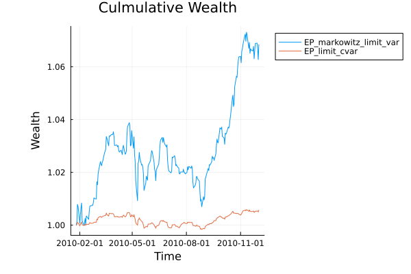

Stochastic Portfolio Optimization
Empirical Forecast
using Clarabel
using Distributions
using PortfolioOpt
using PortfolioOpt.TestUtils
using MarketData # test data (loads the TimeSeries integration)Read Prices
prices = get_test_data();
numD, numA = size(prices) # A: Assets D: Days(316, 6)Calculating returns
returns_series = percentchange(prices);315×6 TimeSeries.TimeArray{Float64, 2, Dates.Date, Matrix{Float64}} 2009-09-02 to 2010-12-01
┌────────────┬──────────────┬──────────────┬─────────────┬─────────────┬────────
│ │ AAPL │ BA │ DELL │ CAT │ EBAY ⋯
├────────────┼──────────────┼──────────────┼─────────────┼─────────────┼────────
│ 2009-09-02 │ -0.000725953 │ -0.00758663 │ 0.00920447 │ -0.00752737 │ -0.0 ⋯
│ 2009-09-03 │ 0.00829398 │ 0.00123967 │ -0.00651466 │ 0.0351643 │ 0.00 ⋯
│ 2009-09-04 │ 0.0225758 │ 0.0142385 │ 0.0288525 │ 0.0237567 │ 0.0 ⋯
│ 2009-09-08 │ 0.0153837 │ 0.00712106 │ 0.0172084 │ 0.0186511 │ -0.0 ⋯
│ 2009-09-09 │ -0.010351 │ 0.0208081 │ -0.00250627 │ 0.0306579 │ 0.0 ⋯
│ 2009-09-10 │ 0.0082973 │ -0.000791609 │ 0.040201 │ 0.00578393 │ 0.0 ⋯
│ 2009-09-11 │ -0.00231803 │ 0.0170331 │ 0.00241546 │ -0.0032861 │ 0.00 ⋯
│ 2009-09-14 │ 0.00906134 │ -0.00740019 │ -0.0126506 │ 0.00494539 │ 0.0 ⋯
│ ⋮ │ ⋮ │ ⋮ │ ⋮ │ ⋮ │ ⋱
│ 2010-11-22 │ 0.0216151 │ 0.00691933 │ 0.00431655 │ 0.00035727 │ 0.0 ⋯
│ 2010-11-23 │ -0.0147753 │ -0.0067156 │ -0.0100287 │ -0.0163095 │ -0.0 ⋯
│ 2010-11-24 │ 0.0196612 │ 0.0284591 │ 0.00434153 │ 0.0249304 │ 0.0 ⋯
│ 2010-11-26 │ 0.000635324 │ -0.00932579 │ -0.0165706 │ -0.00661235 │ -0.00 ⋯
│ 2010-11-29 │ 0.00593651 │ -0.00679012 │ -0.00586081 │ -0.00546773 │ -0.0 ⋯
│ 2010-11-30 │ -0.0180516 │ -0.00916718 │ -0.0257922 │ 0.0111151 │ -0.0 ⋯
│ 2010-12-01 │ 0.0168729 │ 0.0305786 │ 0.0143722 │ 0.0336879 │ 0.00 ⋯
└────────────┴──────────────┴──────────────┴─────────────┴─────────────┴────────
2 columns and 300 rows omittedBacktest Parameters
DEFAULT_SOLVER = optimizer_with_attributes(
Clarabel.Optimizer, "verbose" => false, "max_iter" => 900000
)
date_range = timestamp(returns_series)[100:end];216-element Vector{Dates.Date}:
2010-01-26
2010-01-27
2010-01-28
2010-01-29
2010-02-01
2010-02-02
2010-02-03
2010-02-04
2010-02-05
2010-02-08
⋮
2010-11-18
2010-11-19
2010-11-22
2010-11-23
2010-11-24
2010-11-26
2010-11-29
2010-11-30
2010-12-01Backtest Markowitz
backtest_results = Dict()
backtest_results["EP_markowitz_limit_var"], _ = sequential_backtest_market(
VolumeMarketHistory(returns_series), date_range
) do market, past_returns, ext
max_std = 0.003 / market_budget(market)
k_back = 60
numD, numA = size(past_returns)
returns = values(past_returns)
Σ, r̄ = mean_variance(returns[(end - k_back):end, :])
d = MvNormal(r̄, Σ)
formulation = PortfolioFormulation(
MAX_SENSE,
ObjectiveTerm(ExpectedReturn(d)),
RiskConstraint(SqrtVariance(d), LessThan(max_std)),
)
pointers = change_bids!(market, formulation, DEFAULT_SOLVER)
return pointers
end(Dict{Symbol, StateRecorder}(:decisions => PortfolioOpt.DecisionRecorder{Float64}(2-dimensional DenseAxisArray{Float64,2,...} with index sets:
Dimension 1, [Dates.Date("2010-01-26"), Dates.Date("2010-01-27"), Dates.Date("2010-01-28"), Dates.Date("2010-01-29"), Dates.Date("2010-02-01"), Dates.Date("2010-02-02"), Dates.Date("2010-02-03"), Dates.Date("2010-02-04"), Dates.Date("2010-02-05"), Dates.Date("2010-02-08") … Dates.Date("2010-11-17"), Dates.Date("2010-11-18"), Dates.Date("2010-11-19"), Dates.Date("2010-11-22"), Dates.Date("2010-11-23"), Dates.Date("2010-11-24"), Dates.Date("2010-11-26"), Dates.Date("2010-11-29"), Dates.Date("2010-11-30"), Dates.Date("2010-12-01")]
Dimension 2, 1:6
And data, a 216×6 Matrix{Float64}:
1.5675641946394033e-9 0.05144715270487783 … 0.09209827474875122
1.8556069973606718e-8 0.04853052246042202 0.0942814859989777
1.7900005906952614e-8 0.04874037110355125 0.09381626319260818
8.407769987161409e-9 0.058674556937018466 0.09188010591381746
1.730511990899072e-8 0.05285998137489208 0.09340666944498573
1.4735533304035528e-9 0.062055521069477676 … 0.09314427911474901
1.7915746212735127e-9 0.050734470549223205 0.1009848463383425
3.3087516558769085e-10 0.03243852154959909 0.11231199717445776
2.5453967594434757e-10 0.01020071445471552 0.11831835446119066
5.551189218998349e-10 0.011773453839418378 0.11886019137232924
⋮ ⋱ ⋮
0.04580940034951178 2.3376110406495368e-9 0.08561710387022932
0.07810718519416594 2.093415322590117e-9 0.06716557021177727
0.05930184354173855 9.96469467639547e-10 0.06994766863692028
0.07328125669003595 1.8473322321216838e-9 … 0.0649129427695064
0.08295525259064104 1.726772329444743e-9 0.05738295551088441
0.05699121890585855 3.875013306508301e-9 0.05729305038344347
0.06407161913457085 2.7229520519420913e-9 0.06610489447778016
0.08804816986296937 4.3922555598174494e-10 0.07205944517100825
0.06257505391881191 6.315854427109642e-9 … 0.07309061593630652), :wealth => PortfolioOpt.WealthRecorder{Float64}(1-dimensional DenseAxisArray{Float64,1,...} with index sets:
Dimension 1, [Dates.Date("2010-01-26"), Dates.Date("2010-01-27"), Dates.Date("2010-01-28"), Dates.Date("2010-01-29"), Dates.Date("2010-02-01"), Dates.Date("2010-02-02"), Dates.Date("2010-02-03"), Dates.Date("2010-02-04"), Dates.Date("2010-02-05"), Dates.Date("2010-02-08") … Dates.Date("2010-11-18"), Dates.Date("2010-11-19"), Dates.Date("2010-11-22"), Dates.Date("2010-11-23"), Dates.Date("2010-11-24"), Dates.Date("2010-11-26"), Dates.Date("2010-11-29"), Dates.Date("2010-11-30"), Dates.Date("2010-12-01"), Dates.Date("2010-12-02")]
And data, a 217-element Vector{Float64}:
1.0
1.0012736399672935
1.0078555816044243
1.0071274020463266
1.0006991524397586
1.0040926189777744
1.0065760505371328
1.0083994131189866
1.001673620657531
0.9999107374303866
⋮
1.0663402093898413
1.0659948547398628
1.0677524675016412
1.063058650897085
1.0688473959600886
1.068976856333618
1.066809580403076
1.0627391586584154
1.0684358152324953), :returns => PortfolioOpt.ReturnsRecorder{Float64}(1-dimensional DenseAxisArray{Float64,1,...} with index sets:
Dimension 1, [Dates.Date("2010-01-26"), Dates.Date("2010-01-27"), Dates.Date("2010-01-28"), Dates.Date("2010-01-29"), Dates.Date("2010-02-01"), Dates.Date("2010-02-02"), Dates.Date("2010-02-03"), Dates.Date("2010-02-04"), Dates.Date("2010-02-05"), Dates.Date("2010-02-08") … Dates.Date("2010-11-17"), Dates.Date("2010-11-18"), Dates.Date("2010-11-19"), Dates.Date("2010-11-22"), Dates.Date("2010-11-23"), Dates.Date("2010-11-24"), Dates.Date("2010-11-26"), Dates.Date("2010-11-29"), Dates.Date("2010-11-30"), Dates.Date("2010-12-01")]
And data, a 216-element Vector{Float64}:
0.001273639967293454
0.006573569276572442
-0.0007225038699876615
-0.006382757130336094
0.0033910956452220323
0.0024733092469964297
0.0018114503925270625
-0.006669770305253155
-0.001759937758954959
0.0005509096179894037
⋮
-0.00048502621170776384
-0.0003238691056921063
0.0016488004177163237
-0.004395978232238578
0.005445367532749721
0.00012112147535625838
-0.0020274301709163303
-0.0038155091774883716
0.0053603525640959545)), nothing)Backtest Sampled CVAR
backtest_results["EP_limit_cvar"], _ = sequential_backtest_market(
VolumeMarketHistory(returns_series), date_range
) do market, past_returns, ext
numD, numA = size(past_returns)
returns = values(past_returns)
R = -0.001 / market_budget(market)
d = DeterministicSamples(returns'[:, :])
formulation = PortfolioFormulation(
MAX_SENSE,
ObjectiveTerm(ExpectedReturn(d)),
RiskConstraint(ConditionalExpectedReturn(d), GreaterThan(R)),
)
pointers = change_bids!(market, formulation, DEFAULT_SOLVER)
return pointers
end(Dict{Symbol, StateRecorder}(:decisions => PortfolioOpt.DecisionRecorder{Float64}(2-dimensional DenseAxisArray{Float64,2,...} with index sets:
Dimension 1, [Dates.Date("2010-01-26"), Dates.Date("2010-01-27"), Dates.Date("2010-01-28"), Dates.Date("2010-01-29"), Dates.Date("2010-02-01"), Dates.Date("2010-02-02"), Dates.Date("2010-02-03"), Dates.Date("2010-02-04"), Dates.Date("2010-02-05"), Dates.Date("2010-02-08") … Dates.Date("2010-11-17"), Dates.Date("2010-11-18"), Dates.Date("2010-11-19"), Dates.Date("2010-11-22"), Dates.Date("2010-11-23"), Dates.Date("2010-11-24"), Dates.Date("2010-11-26"), Dates.Date("2010-11-29"), Dates.Date("2010-11-30"), Dates.Date("2010-12-01")]
Dimension 2, 1:6
And data, a 216×6 Matrix{Float64}:
3.197873781321903e-11 6.615209257205219e-11 … 0.02307708469226336
1.6116419169571808e-10 3.868342463565801e-10 0.023128705068220106
2.0347311603196744e-10 0.009049684837284138 0.018876785399658758
1.0494392724390522e-9 0.009078765432001815 0.018937434490117963
3.121993419954766e-11 0.007741356238919309 0.01748856036668003
1.7750185749600457e-10 0.008532769193075065 … 0.017129263286805262
2.620746535281999e-11 5.56567479828237e-9 0.021686511392239965
6.423754487182596e-10 1.5535076661052376e-8 0.0217378925509696
1.4320301721360904e-11 2.388283786461609e-10 0.0204136281812977
5.633386188763138e-10 4.619506123250576e-9 0.020480032441891807
⋮ ⋱ ⋮
0.010688154157498887 1.774115619091218e-11 0.013503506170699378
0.009224752601348602 6.291385806269416e-11 0.012890751044735239
0.009231700092873874 1.1395895758244507e-10 0.012900470385422226
0.01217787969425638 3.2863600253826152e-12 … 0.012445679720610642
0.013857340714055574 1.3756724888003258e-10 0.011193753379672195
0.012168538103052455 6.038883368846956e-12 0.007963397787027362
0.01387614161699705 1.612484798303693e-10 0.011208938090790044
0.013888160537476116 4.841801196578882e-11 0.011218596681005158
0.01219831948304877 2.699923289301748e-12 … 0.007982888087804042), :wealth => PortfolioOpt.WealthRecorder{Float64}(1-dimensional DenseAxisArray{Float64,1,...} with index sets:
Dimension 1, [Dates.Date("2010-01-26"), Dates.Date("2010-01-27"), Dates.Date("2010-01-28"), Dates.Date("2010-01-29"), Dates.Date("2010-02-01"), Dates.Date("2010-02-02"), Dates.Date("2010-02-03"), Dates.Date("2010-02-04"), Dates.Date("2010-02-05"), Dates.Date("2010-02-08") … Dates.Date("2010-11-18"), Dates.Date("2010-11-19"), Dates.Date("2010-11-22"), Dates.Date("2010-11-23"), Dates.Date("2010-11-24"), Dates.Date("2010-11-26"), Dates.Date("2010-11-29"), Dates.Date("2010-11-30"), Dates.Date("2010-12-01"), Dates.Date("2010-12-02")]
And data, a 217-element Vector{Float64}:
1.0
1.000334753722695
1.0010788407725124
1.00094055911287
0.99970931503431
1.0003015687354355
1.000750667784808
1.0012266666753435
1.000143506445019
0.9998666489169328
⋮
1.0051452311081412
1.0052451304204941
1.0053820692632074
1.0048180110479348
1.0052687075870483
1.0053143344357307
1.0053688618805157
1.005034333722581
1.005689514893785), :returns => PortfolioOpt.ReturnsRecorder{Float64}(1-dimensional DenseAxisArray{Float64,1,...} with index sets:
Dimension 1, [Dates.Date("2010-01-26"), Dates.Date("2010-01-27"), Dates.Date("2010-01-28"), Dates.Date("2010-01-29"), Dates.Date("2010-02-01"), Dates.Date("2010-02-02"), Dates.Date("2010-02-03"), Dates.Date("2010-02-04"), Dates.Date("2010-02-05"), Dates.Date("2010-02-08") … Dates.Date("2010-11-17"), Dates.Date("2010-11-18"), Dates.Date("2010-11-19"), Dates.Date("2010-11-22"), Dates.Date("2010-11-23"), Dates.Date("2010-11-24"), Dates.Date("2010-11-26"), Dates.Date("2010-11-29"), Dates.Date("2010-11-30"), Dates.Date("2010-12-01")]
And data, a 216-element Vector{Float64}:
0.0003347537226950216
0.0007438380472619902
-0.00013813263652209644
-0.0012300871089200123
0.0005924259104308485
0.0004489636559704176
0.000475641841527975
-0.0010818331816123878
-0.00027681780294740795
0.00011264574830188582
⋮
-0.00017039574164019
9.938793844029047e-5
0.00013622432834472484
-0.0005610386663112904
0.00044853549016654317
4.538771408875948e-5
5.423919953907873e-5
-0.0003327417136322488
0.0006518992926114061)), nothing)Plot
using Plots
using Plots.PlotMeasures
plt = plot(;
title="Culmulative Wealth",
xlabel="Time",
ylabel="Wealth",
legend=:outertopright,
left_margin=10mm,
);
for (strategy_name, recorders) in backtest_results
plot!(
plt,
axes(get_records(recorders[:wealth]), 1),
get_records(recorders[:wealth]).data;
label=strategy_name,
)
end
plt
This page was generated using Literate.jl.